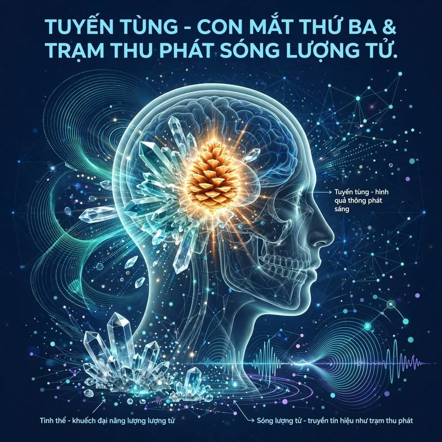
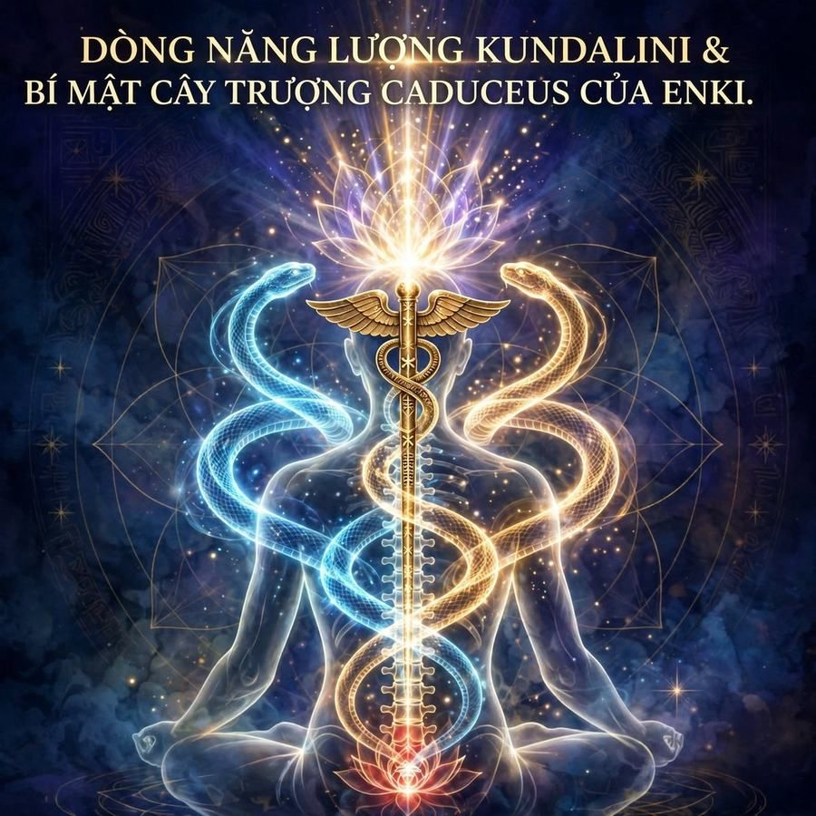
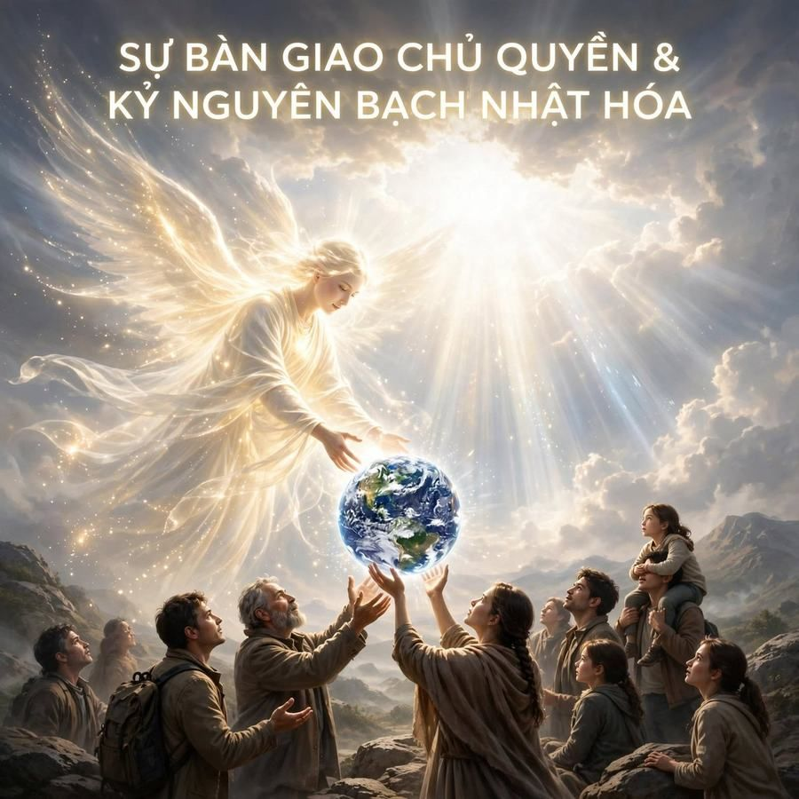
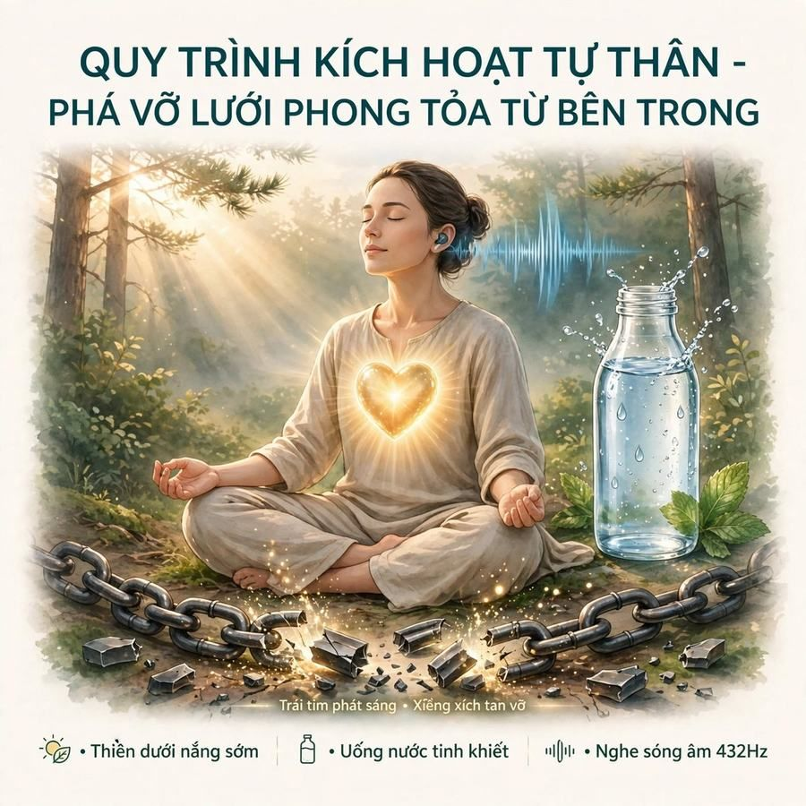
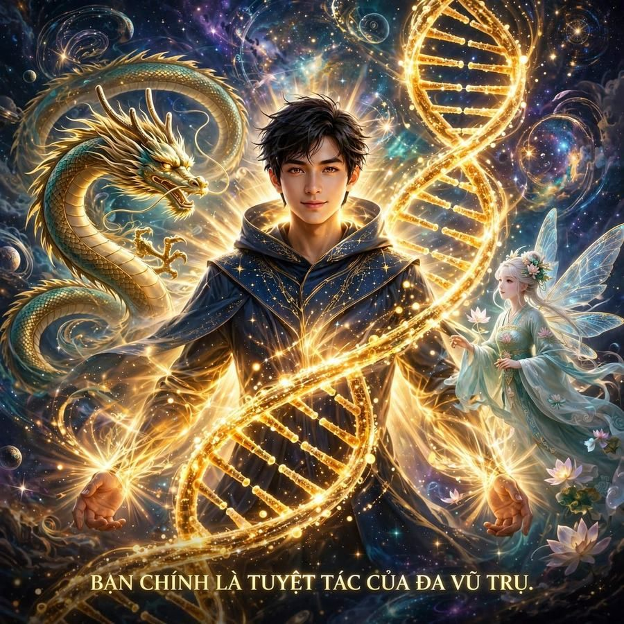

Trang chủ / Chuyên đề 3: Dòng Máu Anunnaki / Kỳ 29
Chuyên đề 3 · Kỳ 29 / 90
PHÁ VỠ MÃ MA TRẬN DI TRUYỀN — KHAI MỞ TUYẾN TÙNG & KÍCH HOẠT BỘ GEN RỒNG - TIÊN

Ở Kỳ 8, chúng ta đã chứng kiến sự kiện vĩ đại khi đại hạm đội của Liên Minh Các Đấng Sáng Lập (The Seeders) chính thức tái nhập Hệ Mặt Trời, kéo theo sự thức tỉnh đồng loạt của mạng lưới các con tàu Hòm Không Gian Cổ Đại (Space Arks) dưới Nam Cực, Đại Tây Dương và các đại dương toàn cầu.
Tuy nhiên, sự giải phóng thực sự của nhân loại Trái Đất không chỉ nằm ở những phi thuyền rực rỡ ngoài không gian hay những tàn tích công nghệ dưới lòng đất. Chìa khóa tối thượng để đập tan Ma trận 3D và vô hiệu hóa hàng ngàn năm thao túng di truyền nằm ngay bên trong thể xác và tâm thức của chính bạn!
Làm thế nào để mỗi cá nhân tự tay kích hoạt lại dải năng lượng thần thánh bị đóng băng? Bí mật về Tuyến Tùng (Pineal Gland) như một "con mắt lượng tử" kết nối với Đa Vũ trụ ra sao? Dòng năng lượng Kundalini cuộn trào qua cột sống phản ánh hình tượng Cây Trượng Caduceus của Enki như thế nào? Và sự thật giải mã theo góc nhìn thiên hà về Bộ Gen Rồng - Tiên — sự kết hợp đỉnh cao giữa dòng di truyền Dragon Queen Orion và các sinh mệnh Paa-Taal — mang lại câu trả lời bừng tỉnh ra sao cho nguồn gốc loài người?
Hãy cùng dấn thân vào Kỳ 9: Phá Vỡ Mã Ma Trận Di Truyền — Khai Mở Tuyến Tùng & Kích Hoạt Bộ Gen Rồng - Tiên để mở khóa kho báu vô giá đang ngủ yên trong tế bào bạn!
✦ ✦ ✦1. TUYẾN TÙNG (PINEAL GLAND) — CON MẮT THỨ BA & TRẠM THU PHÁT SÓNG LƯỢNG TỬ NỘI THỂ
Trong cấu trúc não bộ con người, Tuyến Tùng (Pineal Gland) — một cơ quan nhỏ hình quả thông nằm ngay tại tâm trí — chính là "chiếc chìa khóa vàng" kết nối thể xác 3D với dải chiều không gian siêu việt.
A. Cấu Trúc Vi Tinh Thể Calcite & Khả Năng Thấu Thị
- Con Mắt Nội Thể Hoàn Chỉnh: Tuyến Tùng chứa cấu trúc tế bào tương tự như võng mạc mắt, được bao bọc bởi hàng ngàn vi tinh thể thạch anh Calcite (Calcite Microcrystals).
- Trạm Thu Phát Sóng Vô Hướng (Scalar Receiver): Khi được kích hoạt, các vi tinh thể này phát ra hiệu ứng áp điện (piezoelectric), cho phép Tuyến Tùng thu nhận các dải xung ánh sáng, hình học thiêng liêng và tần số thần giao cách cảm từ Nguồn Vũ Trụ mà không bị giới hạn bởi không gian hay thời gian.
B. Tại Sao Ma Trận 3D Tìm Mọi Cách Vôi Hóa Tuyến Tùng?
- Chiến Dịch Đóng Băng Con Mắt Thứ Ba: Phe kiểm soát ma trận từ lâu đã nhận ra rằng: Nếu Tuyến Tùng của con người hoạt động tối ưu, không một lời nói dối hay hệ thống tôn giáo giả tạo nào có thể thao túng được nhân loại.
- Các Độc Tố Vôi Hóa: Thông qua việc đưa hóa chất Fluoride vào nguồn nước, chất bảo quản tổng hợp, các chùm sóng điện từ hạ tần và việc gieo rắc sự sợ hãi kéo dài, Tuyến Tùng của phần lớn con người đã bị đóng vôi (Calcified), khiến con người rơi vào trạng thái "mù tâm linh" và bị giam cầm trong thực tại vật chất thô ráp.

2. DÒNG NĂNG LƯỢNG KUNDALINI & BÍ MẬT CÂY TRƯỢNG CADUCEUS CỦA ENKI
Sự thức tỉnh di truyền không thể tách rời khỏi dòng chảy năng lượng sinh học cuộn trào qua trục cột sống.
A. Dòng Rồng Thiêng Kundalini (Serpent Power)
- Ngọn Lửa Khai Sáng Nằm Ở Đáy Cột Sống: Dòng năng lượng Kundalini — thường được miêu tả như một chú Rồng lửa hay con rắn cuộn tròn 3 vòng rưỡi tại luân xa gốc — chính là nguồn sinh lực sống nguyên thủy (Phryll / Chi) được gieo mầm trong cơ thể con người.
- Hành Trình Vút Lên 7 Luân Xa: Khi ngọn lửa Kundalini được kích hoạt qua sự thức tỉnh nhận thức và thiền định, dòng năng lượng này sẽ dâng cao qua trục cột sống (kênh Sushumna), đả thông 7 luân xa chính, kích hoạt Tuyến Tùng và bộc phát dòng ánh sáng hào quang rực rỡ xung quanh cơ thể.
B. Giải Mã Biểu Tượng Cây Trượng Caduceus (Thần Y Học)
- Cặp Rắn Xoắn Kép & Chuỗi DNA: Biểu tượng Cây Trượng Caduceus với hai con rắn quấn quanh một cây gậy tròn có đôi cánh phía trên — biểu tượng của ngành y học ngày nay — chính là mật mã di truyền cổ đại do Enki và Ningishzida (Thoth) để lại.
- Ý Nghĩa Thực Sự: Hai con rắn đại diện cho hai luồng năng lượng Âm - Dương (Ida và Pingala) xoắn tròn quanh trục cột sống, vút lên đỉnh đầu (đôi cánh mở rộng) để kích hoạt Tuyến Tùng và phục hồi chuỗi DNA xoắn kép trở về trạng thái đa chiều nguyên thủy!

3. GIẢI MÃ "BỘ GEN RỒNG - TIÊN" DƯỚI GÓC NHÌN EXOPOLITICS THIÊN HÀ
Trong truyền thuyết cổ xưa của dân tộc Việt Nam và nhiều văn hóa phương Đông, nguồn gốc con người luôn gắn liền với huyền thoại "Con Rồng Cháu Tiên". Dưới góc nhìn giải mật thiên hà, đây không phải là một câu chuyện cổ tích thần thoại, mà là bản ghi chép di truyền chân thực nhất về nguồn gốc loài người!
A. "RỒNG" — Dòng Di Truyền Dragon Queen Orion Của Nữ Hoàng Nammu & Enki
- Mẫu Hệ Bò Sát Hoàng Gia Thượng Đẳng: Như chúng ta đã biết ở Kỳ 1 và Kỳ 2, Hoàng tử Enki thừa hưởng dòng máu từ mẹ ông — Nữ hoàng Nammu thuộc dòng Bò sát Hoàng gia Orion (Dragon Queen).
- Đặc Tính "Rồng": Dòng di truyền Rồng mang lại sức mạnh thể chất kiên cường, khả năng làm chủ vật chất, cấu trúc xương chắc khỏe, dòng máu chứa đồng và khả năng bảo vệ lãnh thổ mãnh liệt.
B. "TIÊN" — Dòng Di Truyền Paa-Taal & Sinh Mệnh Ánh Sáng Tiên Nữ
- Dòng Máu Tiên Thể Thuần Khiết: Phía "Tiên" đại diện cho dải gen Paa-Taal từ Các Đấng Sáng Lập và các sinh mệnh ánh sáng siêu chiều (như Tiên Nữ, Sirius, Pleiades).
- Đặc Tính "Tiên": Dòng di truyền Tiên mang lại Luân Xa Tim dồi dào tình yêu thương, sự thấu cảm, tâm hồn bay bổng, lòng từ bi, tư duy nghệ thuật và khả năng kết nối trực tiếp với Nguồn Vũ Trụ.
C. Sự Tích Hợp Đỉnh Cao Của Hai Cực Tính Âm - Dương
- Con Người Trái Đất Là Điểm Hợp Nhất: Khi hai dòng di truyền Rồng (Sức mạnh, Kỷ luật, Làm chủ Vật chất) và Tiên (Tình yêu, Từ bi, Tâm thức Cao cấp) hòa quyện vào làm một trong thể xác con người Trái Đất, bạn sở hữu một bản thiết kế di truyền hoàn hảo nhất Đa Vũ trụ — một sinh mệnh vừa có lá chắn kiên cường để bảo vệ sự thật, vừa có trái tim rộng mở để lan tỏa tình yêu thương!

4. QUY TRÌNH KÍCH HOẠT TỰ THÂN: PHÁ VỠ LƯỚI PHONG TỎA TỪ BÊN TRONG
Để tự mình kích hoạt bộ gen Rồng - Tiên và mở khóa Tuyến Tùng, bạn không cần phải tìm kiếm những công nghệ đắt đỏ hay chờ đợi ai đến cứu. Quy trình nằm ngay trong lối sống hàng ngày của bạn:
- Tẩy Độc Thể Xác & Giải Vôi Hóa Tuyến Tùng:
- Ngừng nạp các thực phẩm biến đổi gen, hạn chế hóa chất độc hại và nước uống chứa Fluoride. Nạp vào cơ thể nguồn nước tinh khiết, thực phẩm hữu cơ dồi dào sinh lực và tiếp xúc với ánh nắng mặt trời buổi sáng để kích hoạt các hạt tinh thể Calcite trong Tuyến Tùng.
- Kích Hoạt Luân Xa Tim Bằng Tần Số Yêu Thương:
- Thiền định tập trung vào nhịp đập của Trái Tim. Phát ra lời khẳng định ý niệm tự do, lòng biết ơn và tình yêu vô điều kiện. Tần số từ tim sẽ tạo ra xung sóng vô hướng mở rộng, làm tan chảy mọi cấu trúc ma trận sợ hãi.
- Thực Hành Luyện Tập Sóng Âm & Tần Số Solfeggio:
- Lắng nghe và xướng theo các tần số sóng âm Solfeggio (như 432Hz, 528Hz - tần số sửa chữa DNA). Âm thanh chuẩn xác sẽ tạo ra sự cộng hưởng hình học, giúp "cắm phích trở lại" các chuỗi DNA rác đang ngủ đông.
- Khai Mở Quyền Chủ Quyền Nhận Thức (Sovereignty Statement):
- Tuyên bố rõ ràng trong tâm thức: "Tôi là một sinh mệnh ánh sáng tự do. Tôi nắm giữ trọn vẹn quyền chủ quyền trên thể xác, tâm trí và DNA của mình. Tôi từ chối mọi sự thao túng hay can thiệp từ ma trận tiêu cực!"

5. LỜI KẾT KỲ 9: BẠN CHÍNH LÀTUYỆT TÁC CỦA ĐA VŨ TRỤ
Kỳ 9 của chuyên đề 3 mang lại lời thức tỉnh kiêu hãnh nhất cho mỗi chúng ta:
- Dòng Máu Rồng - Tiên Đang Chảy Trong Tế Bào Bạn: Đừng bao giờ đánh giá thấp bản thân hay xem mình là những sinh mệnh nhỏ bé, yếu ớt. Bạn mang trong mình di sản của Các Đấng Sáng Lập, sức mạnh của Rồng và sự thuần khiết của Tiên!
- Thời Điểm Bừng Sáng Đã Đến: Khi bạn tự tay mở khóa Tuyến Tùng và kích hoạt Luân Xa Tim, bạn không chỉ tự giải phóng cho chính mình, mà còn góp phần phát ra dải tần số ánh sáng làm sụp đổ toàn bộ lưới phong tỏa 3D trên Trái Đất!
